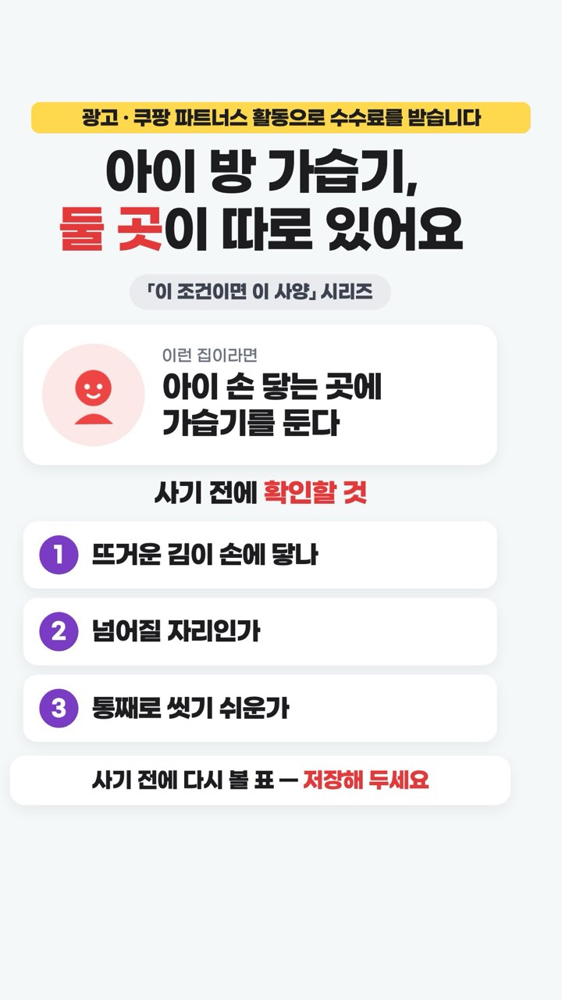

8번 영상
가습기 화상 92건 중 71건 0~6세 아이
광고 이 게시물은 쿠팡 파트너스 활동의 일환으로, 이에 따른 일정액의 수수료를 제공받습니다.
영상에서 비교한 3가지예요. 누르면 쿠팡 검색 결과로 가요.
영상 속 비교표 바로 보기 ↓아이 방 가습기, 둘 곳이 따로 있어요
「이 조건이면 이 사양」 시리즈
이런 집이라면 아이 손 닿는 곳에 가습기를 둔다
아이 손을 먼저 생각해요
상자·상세 페이지에서 확인
- 가열식이면 손 안 닿는 곳에
- 가습기 화상 92건 중 71건이 0~6세 아이였어요
- 확인: 가열식 증기는 약 99℃
- 평평한 바닥 + 전선 숨기기
- 넘어지면 97~100℃ 물이 샜어요
- 확인: 놓을 자리·전선 길이
- 수조가 쉽게 분리되는지
- 물통은 매일 비우고, 사흘마다 씻으래요
- 확인: 「분리 세척」 문구
가습기 물에 살균제를 넣지 마세요(정부 2011 권고) 출처: 한국소비자원(2024.2·2024.4·2025.10) · 미국 환경보호청(2026.4)
